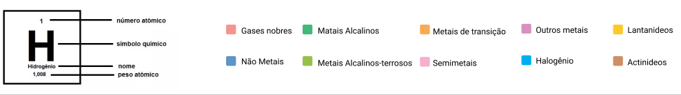

Tabela Periódica
1
H
hidrogênio
1,0
2
He
Hélio
4,0
3
Li
Lítio
6,9
4
Be
Berílio
9,0
5
B
Boro
10,8
6
C
Carbono
12,0
7
N
Nitrogênio
14,0
8
O
Oxigênio
16,0
9
F
Flúor
19,0
10
Ne
Neônio
20,2
11
Na
Sódio
20,2
12
Mg
Magnésio
24,3
13
Al
Alumínio
27,0
14
Si
Silício
28,1
15
P
Fósforo
31,0
16
S
Enxofre
32,1
17
Cl
Cloro
35,5
18
Ar
Argônio
39,9
19
K
Potássio
39,1
20
Ca
Cálcio
40,1
21
Sc
Escândio
45,0
22
Ti
Titânio
47,9
23
V
Vanádio
50,9
24
Cr
Crômo
52,0
25
Mn
Manganês
54,9
26
Fe
Ferro
55,8
27
Co
Cobalto
58,9
28
Ni
Níquel
58,7
29
Cu
Cobre
63,5
30
Zn
Zinco
65,4
31
Ga
Gálio
69,7
32
Ge
Germânio
72,6
33
As
Arsênio
74,9
34
Se
Selênio
79,0
35
Br
Bromo
79,9
36
Kr
Criptônio
83,8
37
Rb
Rubídio
85,5
38
Sr
Estrôncio
87,6
39
Y
Ítrio
88,9
40
Zr
Zircônio
91,2
41
Nb
Nióbio
92,9
42
Mo
Molibdênio
96,0
43
Tc
Tecnécio
(98)
44
Ru
Rutênio
101,1
45
Rh
Ródio
102,9
46
Pd
Paládio
106,4
47
Ag
Prata
107,9
48
Cd
Cádmio
112,4
49
In
Índio
114,8
50
Sn
Estanho
118,7
51
Sb
Antimônio
39,1
52
Te
Telúrio
127,6
53
I
Iodo
126,9
54
Xe
Xenônio
131,3
55
Cs
Césio
132,9
56
Ba
Bário
137,3
Série dos lantanoides
57 - 71
La a Lu
72
Hf
Háfnio
178,5
73
Ta
Tântalo
180,9
74
W
Tungstênio
180,9
75
Re
Rênio
186,2
76
Os
Ósmio
190,2
77
Ir
Irídio
192,2
78
Pt
Platina
195,1
79
Au
Ouro
197,0
80
Hg
Mercúrio
200,6
81
Tl
Tálio
204,4
82
Pb
Chumbo
207,2
83
Bi
Bismuto
209,0
84
Po
Polônio
209,0
85
At
Astato
210,0
86
Rn
Radônio
222,0
87
Fr
Frâncio
(223)
88
Ra
Rádio
(226)
Série dos actinoides
89 - 103
Ac a Lr
104
Rf
Rutherfórdio
(265)
105
Db
Dúbnio
(268)
106
Sg
Seabórgio
(271)
107
Bh
Bóhrio
(272)
108
Hs
Hássio
(277)
109
Mt
Meitnério
(276)
110
Ds
Darmstádtio
(281)
111
Rg
Roentgênio
(282)
112
Cn
Copernício
(285)
113
Nh
Nihônio
(285)
114
Fl
Fleróvio
(289)
115
Mc
Moscóvio
(289)
116
Lv
Livermório
(294)
117
Ts
Tenesso
(294)
118
Og
Oganessono
(294)
Lantanídeos
57
La
Lantânio
138,9
58
Ce
Cério
140,1
59
Pr
Praseodímio
140,9
60
Nd
Neodímio
144,2
61
Pm
Promécio
(145)
62
Sm
Samário
150,4
63
Eu
Európio
152,0
64
Gd
Gadolínio
157,9
65
Tb
Térbio
158,9
66
Dy
Disprósio
162,5
67
Ho
Hôlmio
164,9
68
Er
Érbio
167,3
69
Tm
Túlio
168,9
70
Yb
Itérbio
173,0
71
Lu
Lutécio
175,0
Actinídeos
89
Ac
Actínio
(227)
90
Th
Tório
232,0
91
Pa
Protactínio
231,0
92
U
Urânio
238,0
93
Np
Neptúnio
(237)
94
Pu
Plutônio
(244)
95
Am
Amerício
(243)
96
Cm
Cúrio
(247)
97
Bk
Berquélio
(247)
98
Cf
Califórnio
(251)
99
Es
Einstênio
(252)
100
Fm
Férmio
(257)
101
Md
Mendelévio
(258)
102
No
Nobélio
(259)
103
Lr
Leurêncio
(262)
